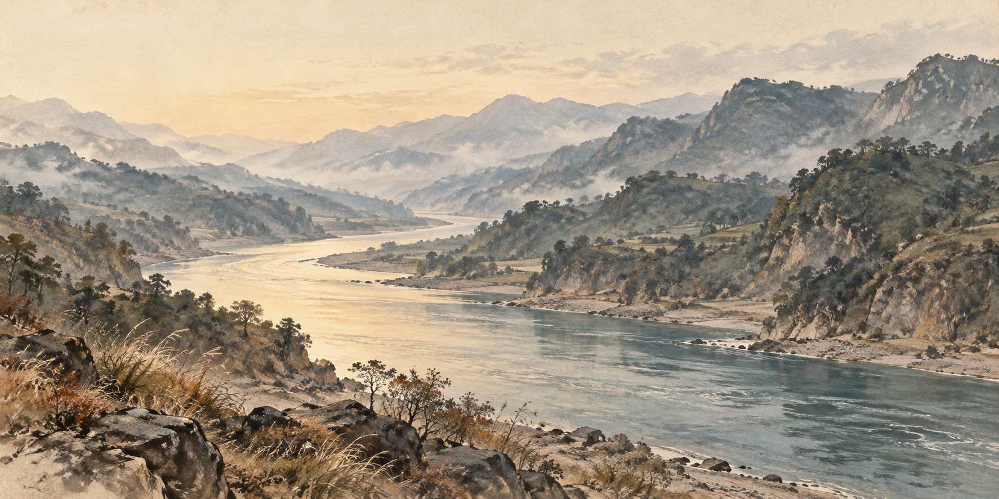
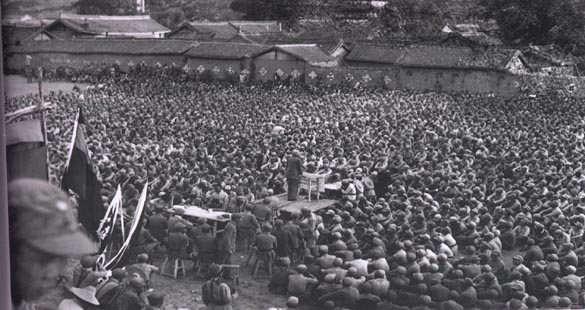

一渡
先脱离堵追
当时的情势
遵义会议后，中央红军原拟北渡长江。土城战斗未能取得预期战果，继续在这里作战面临被堵追的危险。
行动与结果
从土城、元厚等渡口西渡
中央红军调整行动，从土城、元厚等渡口西渡赤水河，向川南转移。
脱离土城一带的堵追
红军随后到达川滇边的扎西地区，并进行整编。
1935年1—3月，中央红军在川黔滇边多次调整行动，四次渡过赤水河。从每一次转向的来由，读长征中的这一段。


长征历时1934—1936年。四渡赤水是其中的关键战役；1935年中央红军到达陕北，与1936年红军三大主力会师，是两个不同的历史节点。
中央红军开始长征。
四渡赤水，在川黔滇边机动作战。
中央红军到达陕北。
红军三大主力会师，长征胜利结束。
选择一渡至四渡，对照日期和渡河方向，再展开当时的行动与结果。四次渡河是在变化的形势中作出的调整。
一渡 · 西渡
1935年1月29日拂晓
一渡
遵义会议后，中央红军原拟北渡长江。土城战斗未能取得预期战果，继续在这里作战面临被堵追的危险。
中央红军调整行动，从土城、元厚等渡口西渡赤水河，向川南转移。
红军随后到达川滇边的扎西地区，并进行整编。
二渡
敌军被吸引到川滇边境，黔北兵力相对空虚；川滇敌军又向扎西逼近，北渡长江的计划暂缓执行。
中央红军回师黔北，向桐梓方向前进。
红军取得遵义战役的胜利。
三渡
遵义战役后，敌军重新组织围攻，企图把中央红军围在遵义、鸭溪一带。红军需要跳出新的合围。
中央红军转兵西进，再入川南，寻求新的机动。
敌方判断红军又要北渡长江，调动重兵围堵。
四渡
敌军再次向赤水河以西地区集中。中央红军决定隐蔽、迅速地折返东岸，争取新的机动机会。
中央红军重回黔北，随后迅速转向南方。
之后，红军南渡乌江、威逼贵阳、巧渡金沙江。四渡结束，长征仍在继续。
四渡赤水中，中央红军灵活机动，由被动转向主动，粉碎了敌军在川黔滇边围歼红军的计划。
这些转向并非预先排定的四步。土城战斗的结果、黔北兵力的变化，以及敌军新的围堵，都影响了后续行动。
回看四次转向四渡结束，不等于渡河当天就完全摆脱围堵。中央红军此后向云南机动，于1935年5月初巧渡金沙江，逐步跳出敌军包围，继续长征。
两幅红军时期的历史照片，保留完整画面与原有比例。图中的部队、事件和时间各有归属，图注随原图一同阅读。

长征1934年10月至1936年10月的整体时间框架。
中共中央党史和文献研究院网站，来源《光明日报》。用于四渡进程、运动作战意义及后续行动。
来源中央纪委监察部网站。与上述资料共同支持四次渡河的时间、渡口和方向。
该文所载渡渭河与1934会议原图仅作研究线索，本预览未转载。
摄影者未详，原始出版来源为解放军出版社1993年《中国人民解放军历史资料丛书·红军长征 图片》。此图不是中央红军四渡赤水现场，也不是1936年三大主力会师。文件页标记 PD-China。
PD-China 说明中国法域的公有领域状态；红军集会文件页另有 PD-US1996，说明美国法域的状态依据。这些标记并非全球任意使用授权，其他法域的保护期限与使用限制仍须按当地法律核对。两张照片保持原始字节、完整画面与比例，未裁切或加滤镜。
河谷图为原创生成艺术示意，不作为史料。地图沿用已核对的西、东、西、东关系及概略路线，只表示教学关系，没有测绘坐标或精确地形含义。
本页保持静音，没有接入音频。下列是后续适配候选，尚未试听或选段。
首选候选。作者以钢琴、弦乐与合成器描述此曲，约4:10有戏剧性收束；适配仍需试听确认。
沉静回望段落的备选。原始创作背景为冬夜，与长征没有历史关联。